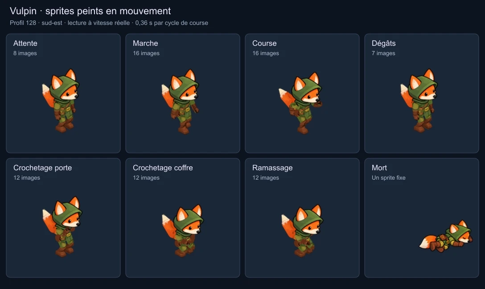
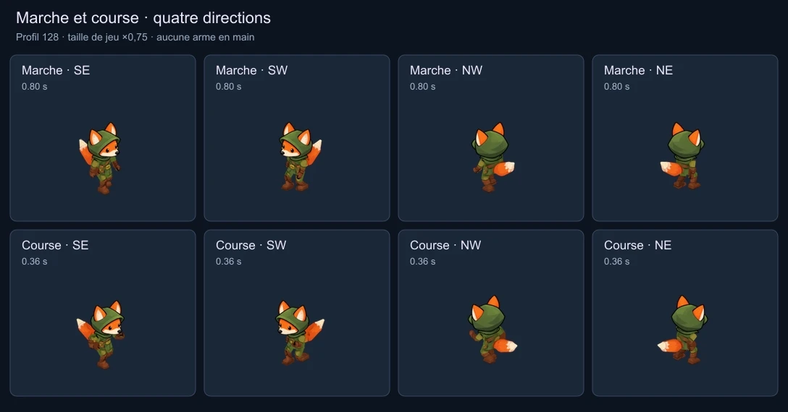
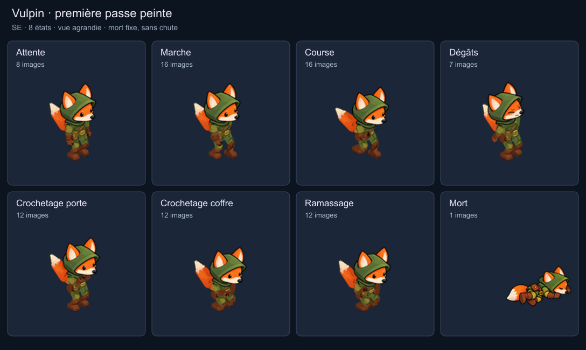
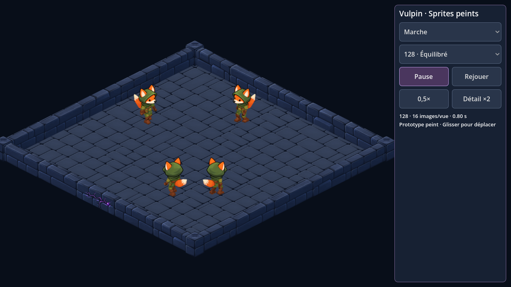
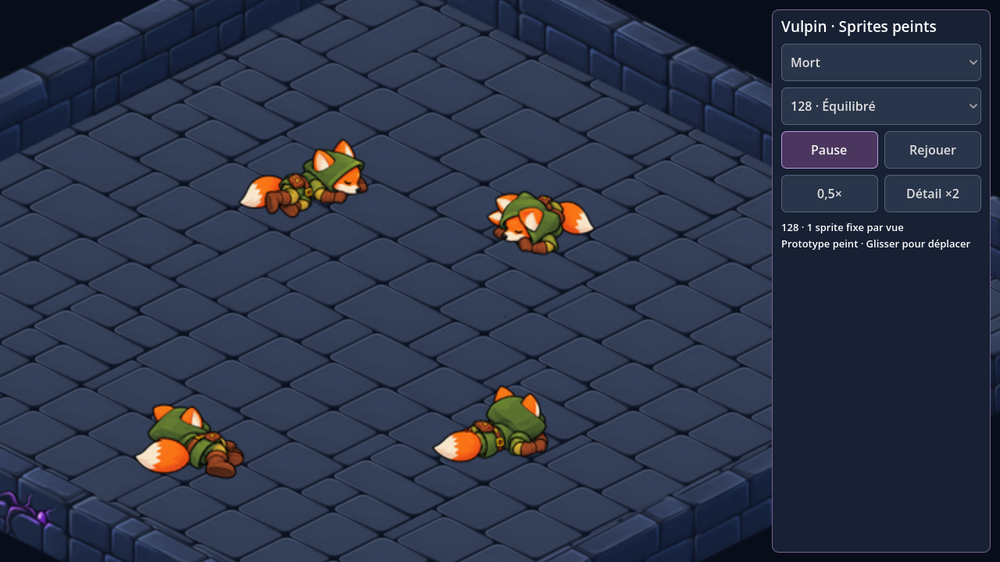

Vulpin · premiers sprites peints
Le renard voleur prend ses couleurs : capuche verte, pelage orange et équipement de cuir. Huit états, quatre orientations isométriques. Mains libres, petits crochets pendant le crochetage et une seule image de mort par direction.
Première passe à examiner. Les sprites sont préparés et testés dans une scène Godot séparée ; le héros du jeu n’est pas encore remplacé. Les raccords des vêtements et la queue restent simplifiés par le mannequin articulé.
Toutes les actions

Vue agrandie. Profil équilibré, course à 0,36 seconde par cycle. La réaction aux dégâts s’arrête sur sa dernière image ; la mort est fixe et n’a aucune transition de chute.
Marche et course à la taille du jeu

Même échelle de rendu ×0,75 que le prototype. Les silhouettes et la cadence restent les mêmes pour les trois profils de résolution.
Examiner une orientation

Dans le donjon


Captures de la visionneuse isolée. Elles ne démontrent pas encore le comportement du héros face aux coffres, portes ou pièges dans une partie.
Poids du lot complet
| Profil | Sprites uniques | Paquet Godot | Textures décodées |
|---|
| Léger · 96 | 240 | 1,54 Mo | 4,87 Mio |
| Équilibré · 128 | 328 | 3,21 Mo | 11,11 Mio |
| Référence · 160 | 624 | 7,78 Mo | 31,42 Mio |
Le profil équilibré contient 16 images par cycle de marche/course, 12 par crochetage/ramassage, 8 d’attente, 7 de dégâts et 1 de mort. Les atlas évitent un fichier chargé par image. Le jeu final n’a besoin que d’un profil ; ces paquets ne contiennent pas le moteur Android.
Préparation et vérifications
Peintures ImageGen conservées en original. Le corps est projeté sur le mannequin articulé ; les têtes peintes suivent l’os de tête pour préserver le visage. Les surfaces découvertes pendant les mouvements utilisent encore des couleurs de secours. Les détails d’équipement entre orientations ne sont pas une reconstruction exacte du personnage. Les quatre morts sont des peintures fixes séparées.
1 786 contrôles de ressources et 588 contrôles de visionneuse réussis. Les 96 comparaisons natives de transparence et d’ancrage n’ont aucun écart. Les trois paquets se chargent indépendamment. Pas de nouveau test sur téléphone, d’APK, de sauvegarde de jeu ou d’intégration du héros en production.